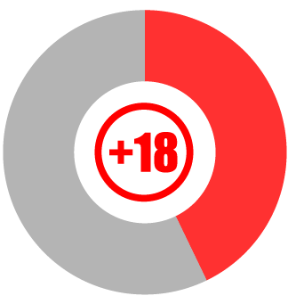
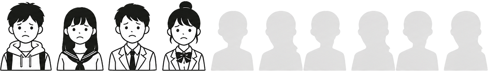
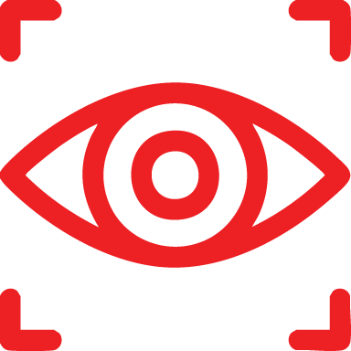
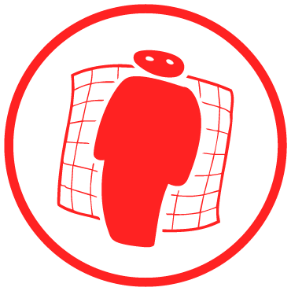

그외 다른 유해물

선정적인 유해물

숏폼 플랫폼을 이용하는 청소년의 53.4%가 이용 과정에서 유해 콘텐츠를 직접 목격했다고 응답했다.
특히 접해본 유해물 유형 가운데 '성 관련(선정성) 콘텐츠'가 42.7%로 가장 높은 비율을 차지하며,
선정 유해물이 청소년들에게 가장 빈번하게 노출되는 유해물임을 보여준다.
이는 일부 사용자의 의도적인 탐색이 아닌, 플랫폼 이용 과정에서 자연스럽게 노출되는 환경 때문으로 분석된다.
성인물'을 'ㅅㅇㅁ'이나 '성O1물'로 바꾸는 등 시각적으로 변형된 은어는 사람의 눈에만 원래 뜻으로 읽힐 뿐, 텍스트의 표면적 형태만 인식하는 AI 필터링 감시망을 쉽게 피한다
성장성 필터 시스템과 일반 게시물을 혼동되어 청소년들의 실제 피드와 검색 결과에 지속적으로 노출되는 문제가 발생한다

지속적 필터 우회 표현은 일반 피드와 검색 결과에 지속적으로 노출되어 청소년에게 부정적인 영향을 끼친다
플랫폼의 인공지능 규제를 비웃듯, 업로더들의 필터링 우회 기술은 날로 교묘해지고 있다. 이들은 성인물 필터링 시스템을 피하기 위해
직접적인 텍스트 대신 성적 행동을 유추하게
하는 특정 이모티콘의 조합, 자음 단어(예: ㅅㅅ), 혹은 의도적인 오탈자 등의 '은어 트랩'을 악용한다.
또한 문맥을 완벽히 짚어내지 못하는 AI 알고리즘의 맹점을 교묘하게 파고든 결과, 이러한 유해 우회 콘텐츠들이
단순한 '댄스 챌린지'나 '유머 영상'으로 잘못 분류되어
청소년들의 알고리즘 추천 피드에 무차별적으로 배달되는 심각한 오작동을 유발하고 있다.
청소년 시기에 선정적인
콘텐츠에 반복적으로 노출
도파민 분비가 유도되어
뇌가 자극 중심으로 변화
일상적 즐거움에 대한
만족도가 낮아짐

인간의 신체를 단순한 소비
대상이나 성적 대상으로 인식
건강한 관계 형성과
가치관 확립에 부정적 영향
선정적 시각 자극은 인간의 뇌에서 강한 도파민 분비를 유도하는 대표적인 자극 중 하나다.
청소년 시기에 이러한 콘텐츠에 반복적으로 노출될 경우 뇌의 보상 체계가 자극 중심으로 변화하면서 일상적 즐거움에 대한 만족도가 낮아질 수 있다.
또한 인간의 신체를 단순한 소비 대상이나 성적 대상으로 인식하는 경향이 강화되어 건강한 관계 형성과 가치관 확립에 부정적인
영향을 줄 위험이 있다.